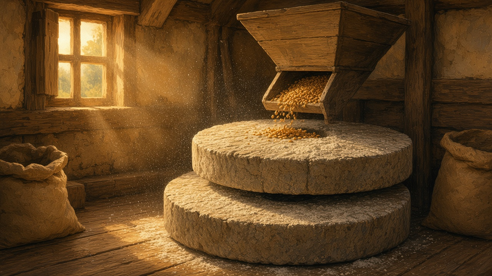

The mill
Moară. Not a postcard wheel. The building on the pârâu where a household’s grain became făină, and the morar who kept the stones turning.

On the stream
A moară de apă sits where a pârâu has enough fall to turn a roată. Not the famous river. The creek at the edge of the sat, a race cut beside it — sometimes a wooden jgheab — and a wheel that groaned when the sluice opened. The same water habit as rivers: the creek with no fame that still did a job. You heard it before you saw it. Water, then wood, then stone.
Some plains had a windmill; later a motor in a shed. What people still mean by the village mill is this wet one, down from the last gate, mud on the path after rain. The roată only worked while the pârâu did. A full spring kept it moving. A week without rain and you already knew the sound would thin.
The morar
The miller is the morar. He lived by the water more than by the church. You paid him in a share of the flour — the uium — not always in coin. Enough came off the sack that the old joke was he never went hungry. He knew whose grain was damp and whose was clean. He kept the stones cutting, the roată clear of ice, the race from silting.
People trusted him and watched him. A short measure was a quarrel the lane heard for a week. A night flood was his problem before it was anyone else’s. The village road ran past the church and the well; the mill sat a little off it, and still everyone knew the way. The yard the sack left is on the house.
Stone and dust
Piatră de moară: two stones, one turning on the other. The lower one stays put. The upper one, the piatra alergătoare, does the work. Wheat or maize went in at the coș — the hopper above the stones — and came out as făină, warm from the grind. The air was white. It settled on beams, on the morar’s shirt, on your eyebrows if you stood too close.
The sound was not a song. It was a low, steady bite, hour after hour, that you felt in the floor. If the coș ran empty and nobody noticed, the stones ground on themselves and the cut went dull. Putting the bite back meant a hammer on the grooves, more dust, a day the wheel still turned and nothing useful came out. You could tell from the road whether the stones were working: the roată moving, and that white haze in the doorway.

A thin August, an iced race
In August the creek shows its bed. The roată turns slow, then stops, and the stones go quiet. You wait for rain, or you go farther, to a mill still on a stronger water. The sacks do not care that the garden is also thirsty. That dry month, buckets and a low shaft, is on the well. Here it is only the pârâu refusing the wheel.
Winter locks the race. Ice in the jgheab, a sluice you open onto nothing, a wheel the morar cannot clear. He breaks a crust or he shuts the door. A household that did not mill after harvest eats what făină is already in the bin, or buys a bag in town. The iced lane is on winter. This page is the creek that would not turn.
Grain in, făină home
After harvest, sacks of grâu, or porumb dried on the porch, went down to the mill on a cart, a barrow, a horse, later a car with the trunk tied shut. You waited your turn. You watched your sack because mixing was the old fear. The wait was also the news: whose roof leaked, whose son was leaving, whether this pârâu would last the week. The corner well collected the same talk, with cans instead of sacks. The mill sat off the road and still filled up.
You took home făină in the same cloth, a little less after the uium, and that is what the cuptor asked for. The loaf is on bread. Mălai for mămăligă took the same trip — a pot on the pirostrii, stirred until it stood. What the sack became had to sit through the cold: flour for the weekly loaf, mălai in a bin, beside what the cellar already held. A household that still says “am fost la moară” is naming an errand, not a museum visit.
What stayed
Most of those wheels have stopped. A ruin in the willows, a wheel capped with boards, a padlocked shed, a mill restored for Sunday visitors with a painted sluice. Shop flour and the town silo did the daily work. The words did not leave. People still point down the creek when they tell you where the moară was.
You do not need a catalog of surviving wheels. You need the habit of asking whether this sat still had a mill in living memory — and whether anyone in the kitchen still knows the sound of stone on grain.